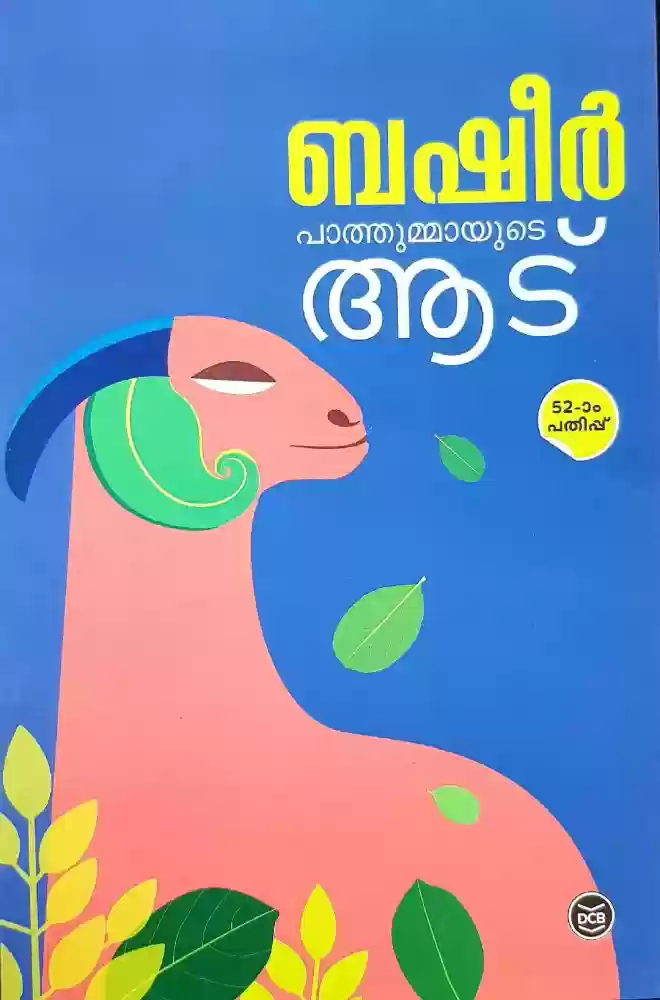
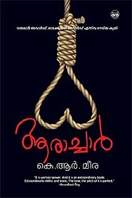
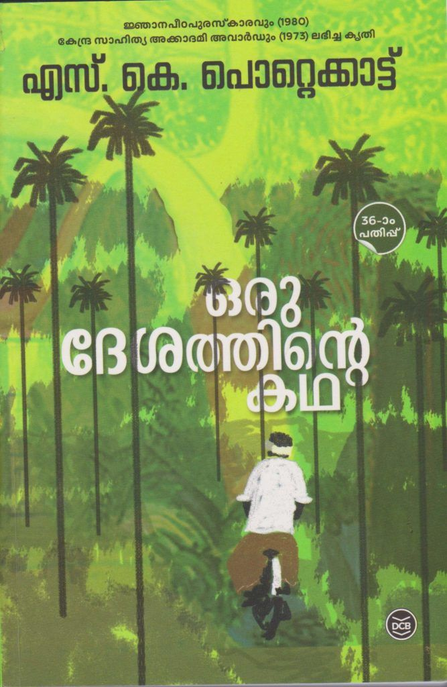

a;"Benyamin"

Goat Days (Malayalam: ആടുജീവിതം, romanized: Aatujeevitham) is a 2008 Malayalam-language novel by Indian author Benyamin. It is about an abused Malayali migrant worker employed in Saudi Arabia as a goatherd against his will. The novel is based on real-life events and was a best seller in Kerala.
a;"nimna vijay"
ഏറ്റവും ഇഷ്ടമുള്ള കുറച്ചുപേരുടെ പേര് പറയാൻ ആവശ്യപ്പെട്ടാൽ എത്ര പേരുകൾക്കൊടുവിലാണ് നാം നമ്മെ കുറിച്ചോർക്കുന്നത് ? എനിക്ക് എന്നെത്തെന്നെയാണ് ഏറ്റവും ഇഷ്ടം എന്നു പറയാൻ നമുക്കിപ്പോഴും കഴിയാറില്ല. അങ്ങനെ കഴിയുന്നിടത്ത് , നാം നമ്മെ സ്വയം ചേർത്തു നിർത്തുന്നിടത്തുവെച്ചാണ് സത്യത്തിൽ ജീവിതം മാറി തുടങ്ങുന്നത്.അങ്ങനെ ഒരു യാഥാർഥ്യത്തിലേക്കുള്ള യാത്രയാണ് ഈ നോവൽ. ജീവിതത്തിന്റെ എല്ലാ വൈകാരികതയും കടന്നു വരുന്ന ഈ യാത്രക്കൊടുവിൽ എനിക്ക് എന്നെയാണ് ഏറ്റവും ഇഷ്ടമെന്നു നിങ്ങൾ തിരിച്ചറിയുന്നിടത്ത് ഈ നോവൽ പൂർണമാകുന്നു.
a;"APJ Abdul kalam

APJ Abdul Kalam's autobiography, Wings of Fire, covers his early life as well as his role in Indian space research and missile programmes. It tells the narrative of a young boy from a poor family who rose through the ranks of Indian space research and missile programmes to become the country's president.
a;"V.Muhammad Basheer"

What is the story of Pathummayude Aadu?
Patthummayude Aadu ("Patthumma's Goat") is a fictionalised account of Basheer's family life - only thing is, as with most of his stories, we cannot say what is truth and what is fiction. The goat belongs to Basheer's sister Patthumma (Fatima), and is characterised by a voracious appetite.
a;"k.r. meera"

” by K R Meera tells the story of such a girl.|Executioner is a story based on the Indian culture of caste and religion. The story illustrated in Kolkata narrates about a family’s culture and profession of “executioner” which was being performed by men from decades. Chetna that’s what the protagonist of the story called as father was an executioner a profession inherited by him. But today there is no one to inherit this profession… Will a girl Chetna be able to inherit her family profession of Execution?
a;"S. K. Pottekkatt"

The story revolves around Sreedharan, a boy who was a resident of Athiranippadam. The story depicts the life of the villagers through his eyes and through the other characters. The novel is set in British India where the protagonist was born.